Chapter One
A Hard Beginning: The Eldest Daughter Who Became a Mother
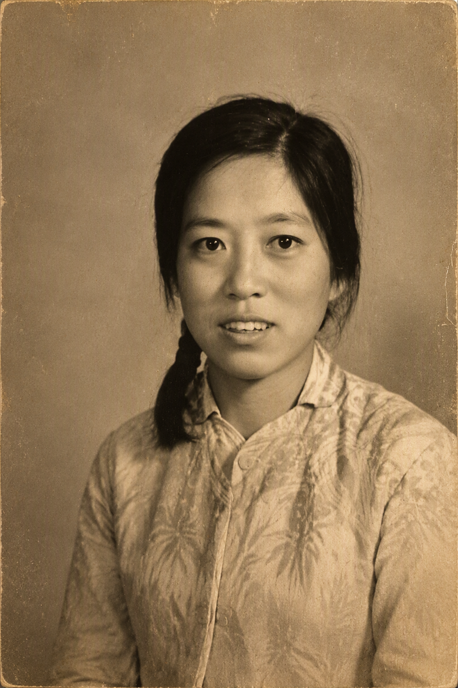
My mother-in-law, Zhang Yuzhen, was born in 1940, the eldest of four surviving children. Looking back on her childhood, she often described it as the opening act of a tragedy.
Her father earned a meager living selling tickets at a local opera theater, while her mother watched over the bicycles parked outside for a few extra coins. Together, their earnings barely kept food on the table.
In those days, when simply surviving childhood was considered a blessing, the family lost one infant daughter. Unable to feed two more daughters, her parents made the heartbreaking decision to give them up for adoption. The children who eventually grew up under their parents' roof were three daughters and one son.
The three sisters each possessed a distinctly different personality. My mother-in-law was capable, decisive, and the pillar of the family. The youngest sister was the quickest thinker—sharp, resourceful, and able to grasp almost anything instantly. The second sister was kind-hearted and was widely regarded as the most beautiful of the three.
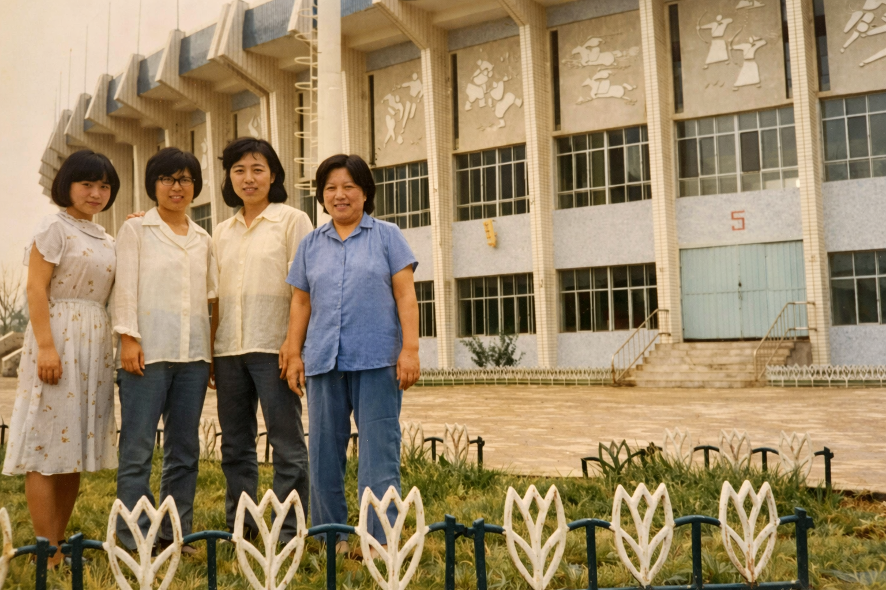
Had she been born in today's image-conscious world, she might well have made a living from her beauty..
As the family's only son, my uncle was adored from an early age and remained the source of laughter at family gatherings throughout his life. Never ambitious for wealth or status, he preferred a quiet, contented life. Ironically, despite having little interest in school, he eventually married a middle school teacher.
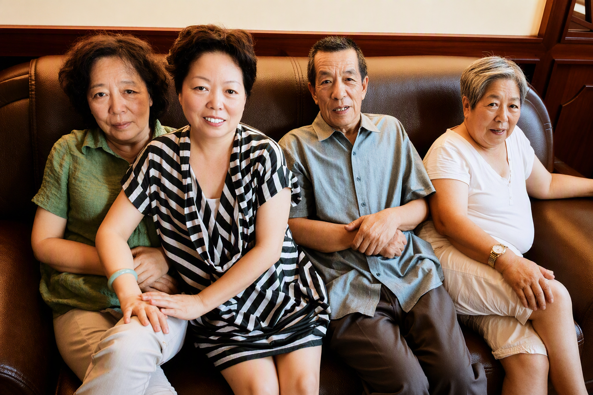
Poverty has a way of assigning responsibilities long before a child is ready for them.
While other children were still safe in their parents' arms, Yuzhen had already become the caretaker of her younger siblings. The Chinese saying, "The eldest sister is like a second mother," could hardly have found a more fitting example. She learned, almost without realizing it, that her own needs always came after everyone else's.
Years later, those who knew her would come to depend on her strength, her decisiveness, and her remarkable ability to shoulder whatever burden life placed before her. But those qualities were not gifts she was born with. They were forged in a childhood where necessity left little room for innocence.
One of Yuzhen's youngest sisters—whom I would later come to know simply as Third Aunt—very nearly grew up in another family.
Soon after the baby was born, her parents concluded that they could not afford to keep another child. A family willing to adopt her had already been found, and the arrangements were nearly complete.
Inside the house, the baby's mother wept in silence.
Standing in the doorway, young Yuzhen watched the adults discuss giving her little sister away. Too young to understand why love alone was not always enough to keep a family together, she could not comprehend why her parents would part with their newborn .
Then, just before the child was to leave, an elderly neighbor intervened.
"The girl was born during her mother's Fengjiunian (逢九年)—a year in which a person's age is a multiple of nine," she said, invoking an old folk belief. "Don't send her away. Keep her at home, and she will bring good fortune to the family."
Whether it was superstition, intuition, or simply a desperate hope, no one could say.
But those words changed everything.
The adoption was called off.
The baby stayed.
Looking back, the family's fortunes did seem to change, though not in the magical way the old woman had imagined.
The s all grew up to marry well-educated men, opening doors to a world their parents had never known. The youngest , through determination and years of hard work, earned a place at university after China's National College Entrance Examination was restored. She later built a successful career at a major hospital, becoming one of the family's proudest success stories.
Because her own parents could offer little beyond love, the youngest sister spent much of her childhood in Yuzhen's future home, where my wife's parents raised her as one of their own.
Years later, whenever the family spoke of how close they all remained, someone would inevitably say, half joking and half in earnest:
"Perhaps the old neighbor was right after all."
Growing up in the shadow of the opera theater, Yuzhen absorbed its world long before she truly understood it. The melodies drifting across the courtyard, the painted faces, and the graceful movements on stage became part of the landscape of her childhood.
When she was about ten years old, someone in the neighborhood noticed that she was an attractive little girl.
"Why not send her to study opera?"
It sounded like the answer to several problems at once. There would be one less mouth to feed at home, and if the girl proved talented enough to become a performer, she might one day earn enough to lift the whole family out of poverty.
So Yuzhen was sent to live in the household of a celebrated opera performer.
Only later did her parents discover what her apprenticeship actually looked like.
Every morning, long before dawn, she was expected to rise at five o'clock. She did not begin the day by practicing scales or learning stylized gestures. Instead, she lit the stove, prepared breakfast, emptied chamber pots, hauled water, scrubbed floors, and washed whatever needed washing.
She had not been taken in as a student.
She had become an unpaid servant.
On winter mornings, the sky was still black when she stepped into the courtyard. Snow crunched beneath her feet as she hurried toward the coal stove, her small hands reddening in the bitter cold before the fire had even caught. While the household still slept, she crossed the yard carrying a heavy chamber pot, careful not to spill its contents across the frozen ground.
Before she learned a single movement of the opera stage, she had already mastered the work of serving an entire household.
When the truth finally reached her parents, they brought their home.
Yuzhen was overjoyed.
Or almost.
Years later, she would laugh as she told the story.
"The only thing I hated about leaving," she liked to say, "was the food. They ate so much better than we did."
It was such an unexpected punchline that everyone around the table would laugh.
And then, almost without realizing why, they would fall silent.
The opera stage never made her an actress.
Life cast her in a far greater role.
Chapter Two
The Second Act: The Streets as Her Stage
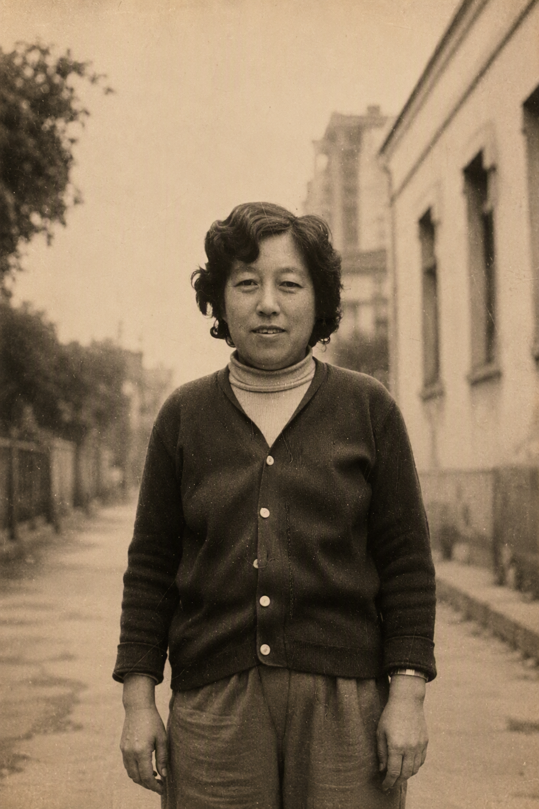
If you had met Yuzhen in those years, you might have assumed she was a woman with little education.
You would have been right about her schooling.
But you would have been completely wrong about the person.
Yuzhen did not learn her most important lessons from textbooks. She received only a few years of formal education, yet she possessed a remarkable understanding of people. She lacked academic credentials, but she had something just as valuable: practical wisdom.
In today's language, she was street smart, not school smart.
When she was twelve years old, Yuzhen entered a first-grade classroom for the very first time. By then, childhood had already taught her lessons that no school ever could.
There was always work waiting at home, and, truthfully, studying never held much attraction for her.
Years later, she would laugh as she recalled those days:
"Whenever I saw something with words on it, my head started hurting. If you asked me to study, I'd much rather wash clothes, cook meals, or take care of children."
So her education came in fragments.
She spent part of her days sitting in classrooms, struggling to catch up with children several years younger than herself. The rest of her time was devoted to household chores and caring for her younger siblings.
Starting school so late meant she was always trying to close a gap that seemed impossible to bridge.
Teachers and classmates sometimes looked down on her. School never became a place where she truly felt she belonged.
But life has a way of closing one door while quietly opening another.
When the local food service cooperative began hiring workers, Yuzhen did not hesitate. She left school and applied.
That decision changed the course of her life.
For there, she found the stage on which her true talents could finally be seen.
The food service cooperative became the first place where Yuzhen's abilities had room to grow.
Others learned management from books and formal training. Yuzhen learned by observing people.
She paid close attention to how customers spoke, what they valued, what frustrated them, and what they never said aloud. She had an instinct for sensing what lay beneath the surface.
When customers complained, other employees often kept their distance.
Yuzhen stepped forward.
She listened.
She explained.
She found solutions.
Before long, her supervisors noticed something remarkable about this young woman who had barely completed elementary school: whenever problems arose, she was the person they trusted most to resolve them.
Less than two years later, before she had even turned twenty, Yuzhen was appointed manager of a dessert shop.
A young woman with so little formal education was now responsible for running an entire business.
The shop enjoyed one advantage: it occupied a good location.
Yet despite that, business remained only average.
Yuzhen was not satisfied.
Instead of blaming circumstances, she began to observe.
She watched the customers.
She watched the neighboring shops.
She watched the flow of people along the street.
Gradually, she reached a conclusion.
The problem was competition.
Several shops on the same street sold nearly identical goods, all competing for the same customers. No matter how hard each shop worked, there were only so many people to serve.
Many managers would have responded by lowering prices.
Yuzhen chose a different path.
She approached nearby schools and proposed delivering snacks during students' breaks. Instead of leaving campus to buy food, students could purchase pastries and baked goods without ever leaving school.
It was more convenient.
It was safer.
And it solved a problem that no one else had recognized.
Business improved quickly.
That was Yuzhen's gift.
She did not simply work harder within the rules everyone accepted.
She looked at the situation from a different angle and discovered a new way forward.
After she married, Yuzhen's career continued to flourish.
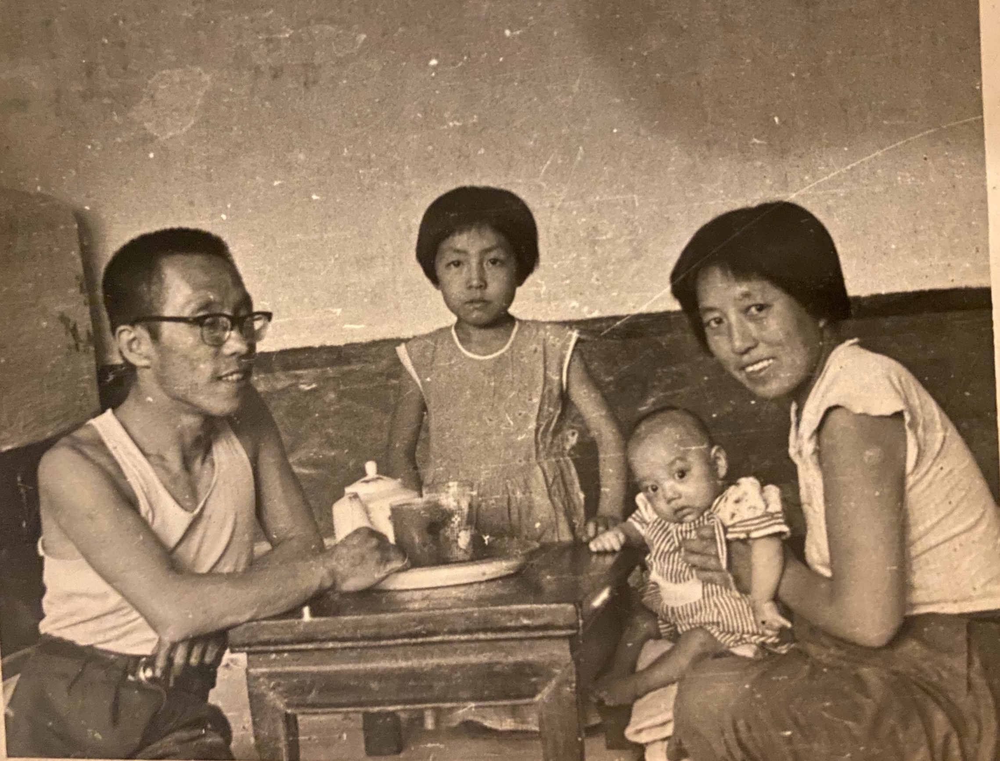
The food service cooperative gradually entrusted Yuzhen with two more struggling businesses. One was a restaurant. The other sold everyday household goods.
Neither store had been performing particularly well.
Yet once they came under Yuzhen's management, the outcome was much the same as before: she found a way to bring them back to life.
At her busiest, she was responsible for three different businesses at the same time.
And somehow, she rarely seemed overwhelmed.
Every morning at around ten o'clock, she made her rounds. She visited each store, chatted with employees, reviewed the account books, and quietly observed what was happening.
She had an unusual ability to notice what others overlooked.
A small inconsistency in the accounts.
A subtle change in customers' buying habits.
A problem that had not yet become obvious.
More often than not, she saw it before anyone else.
Once, during a sanitation inspection, inspectors discovered that a kitchen window screen had been damaged. They ordered the store to repair it within a specified period.
Yuzhen did not argue.
She acknowledged the problem immediately.
She wrote down every required correction and personally escorted the inspectors to the door.
After the repairs were completed, she invited them back to inspect the shop again.
From then on, whenever inspections took place, that particular inspector often visited her store first.
From then on, whenever inspections took place, that particular inspector often visited her store first—not to give her special treatment, but because he knew she would take every inspection seriously.
Whether she faced an unhappy customer or an unexpected inspection, problems that gave others headaches often found solutions in Yuzhen's hands.
She could be sharp-tongued and quick-tempered, but she never used her position to intimidate others.
When she was wrong, she admitted it.
When she was right, she stood her ground.
Over the years, customers, employees, and supervisors alike came to respect her.
On the surface, Yuzhen's management style appeared almost effortless.
She rarely stayed at any one store for more than an hour. By three-thirty each afternoon, she was usually back home.
To outsiders, it might have seemed like a hands-off approach.
Yet somehow, three businesses employing more than a dozen people continued to run smoothly.
Years later, when we asked her what her secret was, she laughed.
"What secret?" she said.
You just have to keep your eyes on the big picture and keep track of the money. And every now and then, do something nice for your people.
But when something really goes wrong, you have to step forward. You take responsibility, clean up the mess, and protect the people who work for you.
Then people will naturally be willing to follow you.
She made it sound simple.
But the truth was, she worried more than anyone realized.
The food service cooperative was a collectively owned enterprise, and employees' wages depended entirely on each store's profits.
When business was slow, Yuzhen worried that her employees would not earn enough.
When business improved, she spent countless hours visiting higher-level offices, requesting additional supplies and negotiating for the resources her stores needed—more grain, cooking oil, sugar, and other necessities.
Much of her real work took place where no one could see it.
Keeping three businesses profitable was never easy.
And like every leader, Yuzhen inspired different opinions.
Some employees remembered how she protected them, stepped forward whenever problems arose, and willingly accepted responsibility on their behalf.
Others felt she was too demanding and too strict, believing that no matter how carefully scarce resources were distributed, not everyone could be satisfied.
Yuzhen never took those differences personally.
She understood that no leader could please everyone, and that fairness did not always mean giving everyone exactly what they wanted.
Sometimes, leadership meant making difficult choices.
In an era when opportunities were scarce, resources were limited, and every job mattered, she believed that if she could protect people's livelihoods and help them keep food on their tables, she had done what she was meant to do.
For her, that was enough.
She never studied management theory or read books about leadership.
Yet through years of experience, she came to understand something fundamental that many textbooks struggle to teach.
Managing people was not about watching them closely.
It was about trusting them.
Leadership was not about pushing people harder.
It was about carrying the responsibility when the burden became heavy.
Those lessons did not come from a classroom.
They came from the streets, from countless conversations, from solving one problem after another, and from standing beside ordinary people through ordinary struggles.
With the wisdom she gained from everyday life, Yuzhen built one successful business after another.
More importantly, she became someone others could depend on.
In the world she knew, that was the truest measure of success.
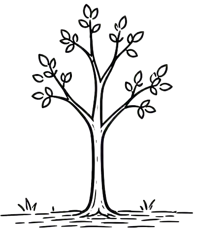
Chapter Three
When a Woman from the Opera House Met a Man of Books
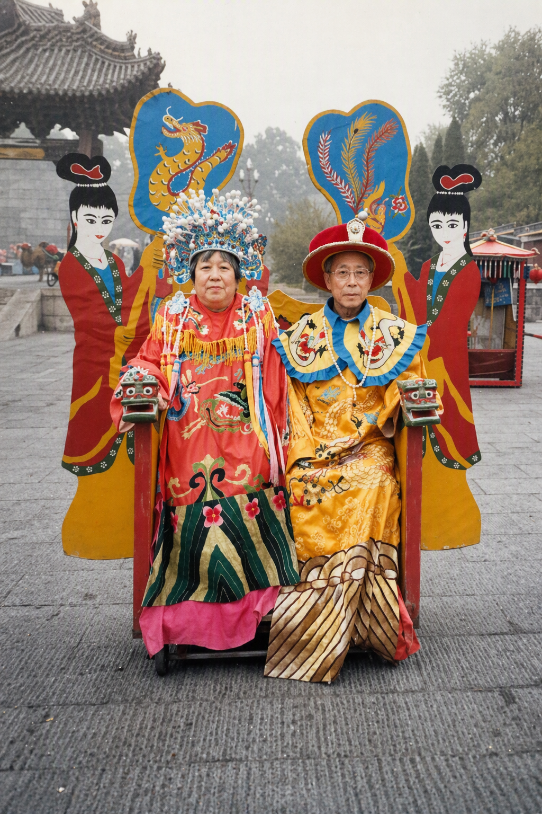
If Yuzhen's early life was a story of perseverance and resilience, then meeting Yang Jianwei was the moment her life took an unexpected turn.
As the old saying goes, some people are destined to meet, no matter how different their paths may seem.
Their story began in a place where no one would have expected a love story to begin.
When Yuzhen was young, she was known throughout the neighborhood for her beauty. She had large, expressive eyes, long eyelashes, and a quiet grace that made her stand out wherever she went.
My wife's younger brother inherited much of his mother's appearance. He had the same refined features and tall, confident bearing. Years later, he married a spirited police officer. Together, they made a striking couple—he was handsome, she was elegant—and they built a happy family while each pursued a successful career.

But Yuzhen’s own love story began in a far less romantic place.
Yang Jianwei first saw her at a government-run facility where their mothers were receiving treatment for opium addiction.
It was the early years of the People's Republic of China, when the new government was working to free people from the opium addiction that had scarred the old society.
That year, Yuzhen was twelve.
Jianwei was fourteen.
One was a young girl with braided hair. The other was a teenage boy just beginning to discover the world around him.
Both often came to the facility carrying lunch boxes for their mothers.
And it was there, in that unusual place, that their paths crossed for the first time.
Years later, Jianwei still remembered the little girl with braided hair and delicate features.
It was the first time he had realized that someone could be so striking.
That image stayed with him, quietly preserved somewhere in his memory.
Yuzhen, however, remembered nothing about that encounter.
To her, it was simply another ordinary day among many—another day of carrying a lunch box to her mother.
But sometimes, life remembers what people forget.
Ten years later, their paths crossed again.
This time, they met in the courtyard where Yuzhen’s family lived.
Jianwei’s mother had a close friend who lived there, and he often visited to bring food and household items on his mother’s behalf.
By then, Jianwei was a university student nearing graduation.
In those days, university graduates were extremely rare. For many young people, a college education represented a bright future and a respected place in society.
Yuzhen, who had struggled to finish even elementary school, had always admired educated people.
When she learned that the young man who often visited the courtyard was a university student, she became curious.
She approached his mother’s friend and asked if she could help introduce them.
The older woman found herself in a difficult position.
She had watched Yuzhen grow up. She knew that this young woman was capable, straightforward, and full of energy. She also knew that Yuzhen could be quite strong-willed.
Deep down, she worried that if her friend's son married Yuzhen, he might end up being completely outmatched.
So she agreed politely—but never actually brought up the matter.
A few days later, Yuzhen asked again.
Only then did the older woman finally mention the idea to Jianwei.
When Jianwei heard who the young woman was, he immediately recognized the name.
She was the girl he had remembered from ten years earlier.
Without hesitation, he canceled another introduction that had already been arranged. He wanted to meet Yuzhen instead.
The two of them soon realized that they understood each other.
And this time, neither of them forgot.
After spending time together, Yuzhen and Jianwei both became certain that they had found the right person.

But their relationship was not immediately accepted by everyone.
Yuzhen’s mother strongly opposed the match.
In her eyes, Jianwei was thin, ordinary-looking, and hardly seemed like the kind of man who matched her . Yuzhen was beautiful, capable, and sharp-minded.
To her mother, the pairing seemed completely uneven—as the old saying goes, it was like a beautiful flower planted in ordinary soil.
She could not understand why her daughter, who had so many strengths, would choose someone like him.
But Yuzhen did not back down.
For years, she had carried responsibilities for her family. At home, her voice carried weight because she had earned that trust through everything she had done.
This time, she stood firm.
She argued her reasons.
She defended her choice.
And she refused to give up.
In the end, her family could not persuade her otherwise.
The teenage boy she had once met by chance at a rehabilitation facility had finally become the person who would walk beside her for the rest of her life.
A meeting that seemed ordinary at the time had, after ten years of separation and change, become a bond written quietly by fate.
Some people meet for the first time without realizing that life has already begun writing the opening lines of their story.
But life together is never exactly like a romantic tale.
Yuzhen and Jianwei came from two very different worlds.
He was a university-educated mathematics
teacher.
She was a food service worker who had not completed elementary school.
The difference in their education was undeniable.
Even Jianwei himself once hesitated because of it.
But life soon proved something important:
Education and wisdom are not the same thing.
After graduating from university, Jianwei was assigned to work in Jining.
As the only son in his family, he hoped to return to Hohhot so he could care for his aging parents.
He submitted applications.
He visited government offices.
He spoke with officials again and again.
But every attempt was met with carefully worded explanations and reasons why nothing could be done.
Watching him become increasingly troubled, Yuzhen finally said:
"Why don't I try?"
Once Yuzhen stepped in, things moved quickly.
She figured out who was reasonable, who needed a warmer approach, when a conversation should be direct, and when patience mattered more than words.
No one expected that a woman who had barely completed elementary school could solve a problem that had frustrated a university graduate for so long.
With only her determination, her ability to communicate, and her sharp understanding of people, she helped bring Jianwei back from Jining to Hohhot.
The problem that formal education could not solve was solved by the practical wisdom she had learned from everyday life.
When Yuzhen talked about her marriage, she often mentioned the old Chinese story "The Oil Seller and the Flower Queen," a tale about an ordinary man winning the heart of an extraordinary beauty.
She would always laugh and say:
"I was just lucky. Somehow, I ended up with him."
That was her way of telling the story.
For decades after their marriage, Yuzhen and Jianwei remained very different people.
Jianwei was educated and carried the pride of a scholar. He was highly capable in his work, but he was also strong-willed and sometimes too direct. In a school environment, where relationships mattered as much as ability, his straightforward nature occasionally created misunderstandings.
Yuzhen, on the other hand, understood people.
She knew how to talk to different people, how to soften tension, and how to resolve conflicts before they grew larger.
Many disagreements and difficult situations that involved Jianwei were quietly handled by Yuzhen behind the scenes.
She became the bridge between him and the world around him.
As Yuzhen’s career at the food service cooperative continued to grow, her income eventually surpassed Jianwei’s by a significant amount.
Naturally, the balance within the family began to shift.
At home, Yuzhen gradually became the one everyone deferred to. Sometimes, she could not help but treat her husband—the "poor schoolteacher," as she jokingly called him—with a little too much authority.
After all, she had become the one who brought in more income and solved more practical problems.
But life has a way of turning things around.
After retirement, Jianwei, as a senior teacher, received a pension that was more than three times higher than Yuzhen’s.
Faced with that reality, Yuzhen did what she
had always done: she accepted it with humor.
Without resentment or embarrassment, she simply handed the household "leadership" back to him.
The person who once gave the orders became a little more careful with her words.
The "poor schoolteacher" who had once been underestimated suddenly became the pillar of the family.
Whenever they talked about those years, both of them laughed.
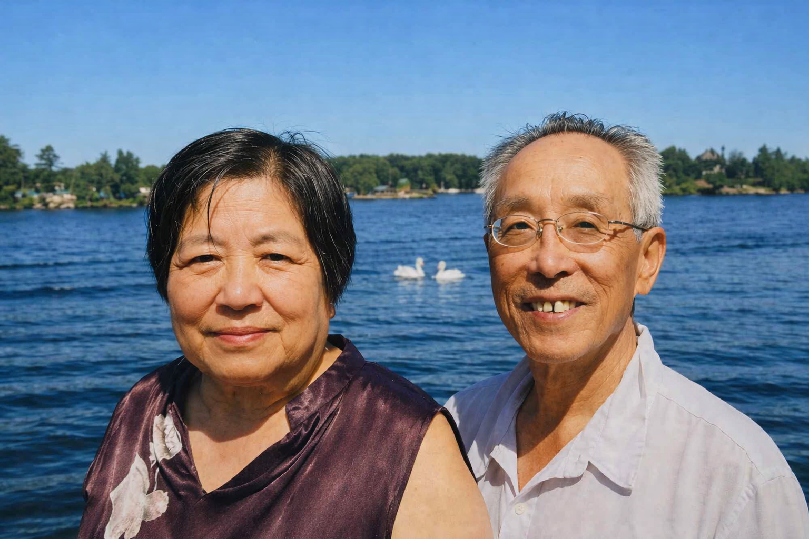
One understood ideas.
The other understood people.
They seemed to come from opposite directions, yet somehow they walked the entire road of life together.
Looking back, many of the abilities Yuzhen would later rely on had their beginnings in the theater of her childhood.
She did not simply watch performances.
She watched people.
She learned to notice their emotions, their tone of voice, and the circumstances behind their actions.
She had never become an actress.
Yet the opera house had quietly given her the gift she would use for the rest of her life:
the ability to understand people.
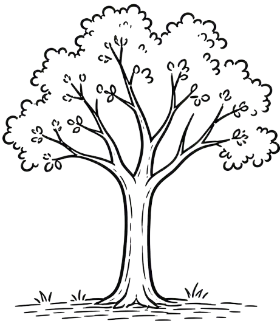
Chapter Four
Lessons from the Stage, Warmth from Everyday Life.
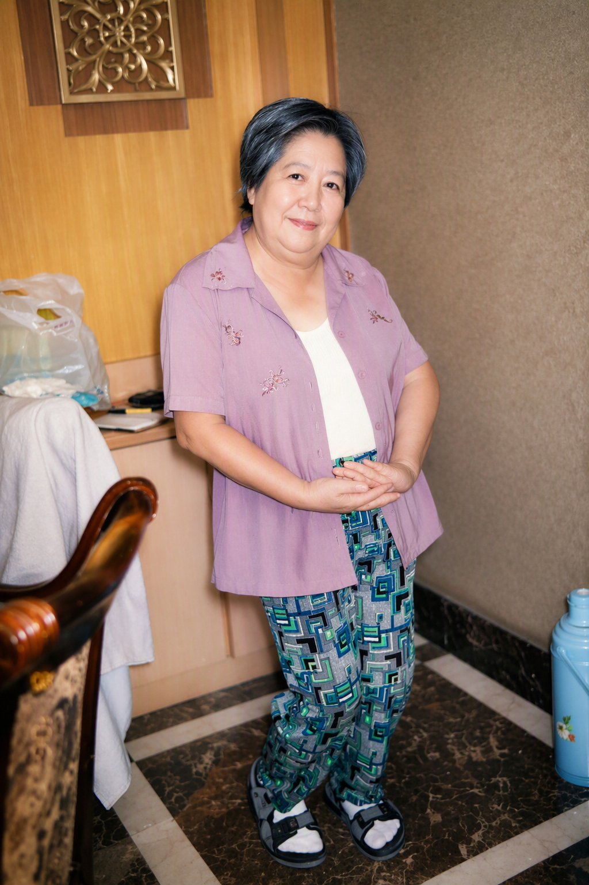
In the teachers' residential compound, people mentioned "Auntie Zhang" more often than many senior teachers.
It was not because she held any official position.
It was because of the way she treated people.
Having grown up around the opera theater, Yuzhen carried its stories with her throughout her life. For her, traditional opera was more than entertainment. It was a language for understanding people.
She rarely gave long lectures about life. More often, a single line from a traditional opera expressed exactly what she wanted to say.
If someone misunderstood her, she would slap her thigh and exclaim,
"I'm more wronged than Dou E!"
Dou E is a legendary heroine in Chinese opera who has become a symbol of profound injustice. According to the story, her wrongful execution caused snow to fall in midsummer.
When talking about corrupt officials, she would sigh,
"If Judge Bao were still alive, he would send every one of them to justice."
Whenever the conversation turned to unfaithful husbands, there was one name she never failed to mention:
Chen Shimei.
To Yuzhen, the characters of traditional opera were never distant legends.
They were lessons about human nature.
When encouraging someone to be patient, she would mention Wang Baochuan.
"Look at Wang Baochuan. She waited eighteen years in the cold cave. Didn't Xue Pinggui finally return?"
When advising young women to become independent, she would say,
"Look at Mu Guiying and Hua Mulan. Didn't they each build their own lives through their own strength?"
Someone once described marriage with a rather crude saying:
"When a turtle sees a green bean, it knows it has found the right one."
Yuzhen disliked the expression. She thought it sounded coarse.
Instead, she would smile and say,
"No—that's the story of Xu Xian and the White Snake. When two people truly understand each other, even a human and a snake can spend a lifetime together."
She said these things casually, almost as if she were making an ordinary joke.
Yet the people listening usually understood exactly what she meant.
That was Yuzhen.
She was never someone who preached wisdom.
She simply had a remarkable way of seeing through life.
Yuzhen was full of contradictions.
She belonged to a generation shaped by traditional values, and from time to time those old beliefs still surfaced in the things she said.
She might joke with her neighbors:
"What's the point of making a lot of money if a family doesn't have a son?"
But her words were never the true measure of her heart.
When real life intervened—when someone needed help, when a family member was in difficulty—her actions always revealed what she truly believed.

Her love was never measured by whether someone was a son or a daughter.
Whoever needed her most was the one she stood behind.
She would do everything she could to lift that person up.
Beyond her strength and wisdom, Yuzhen also had countless little habits that made people smile.
She loved keeping the house neat and orderly.
She could not tolerate clutter—not even the smallest bit.
Once, after emptying a newly purchased bag of flour into the large flour container at home, she casually threw away the empty cloth sack.
She didn't think twice about it.
The next time she bought flour, she suddenly realized she had nothing to carry it home in.
She ended up walking around the neighborhood asking everyone if they happened to have an extra flour sack.
For quite some time afterward, the story became one of the neighbors' favorite jokes.
Compared with housekeeping, however, she took food much more seriously—especially braised pork.
One day, while watching television, she hurried over to me, visibly excited.
"The TV said there was an old woman who lived to be ninety-eight and only passed away last year,"
she announced.
"Do you know what she ate every single day? A bowl of fatty braised pork!"
I couldn't resist teasing her.
"Isn't it possible that if she hadn't eaten that bowl of fatty pork every day, she might still be alive today?"
She froze for a moment.
Then she waved her hand dismissively and gave me a look of complete disapproval.
"You always know how to ruin the fun!"
With that, she happily returned to the television and continued watching her favorite soap opera.
She often fell asleep in front of the television.
But if someone quietly walked over and turned it off, she would immediately open her eyes and protest,
"Who told you to turn it off? I was still watching!"
When we were younger, we thought these little habits were simply the stubborn quirks of an elderly woman.
Only later did we realize how precious they were.
The things that once made us laugh eventually became the things we missed the most.
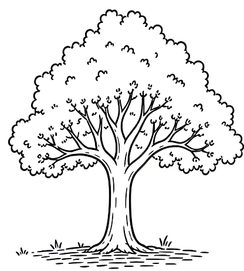
Chapter Five
A Tree That Sheltered Everyone
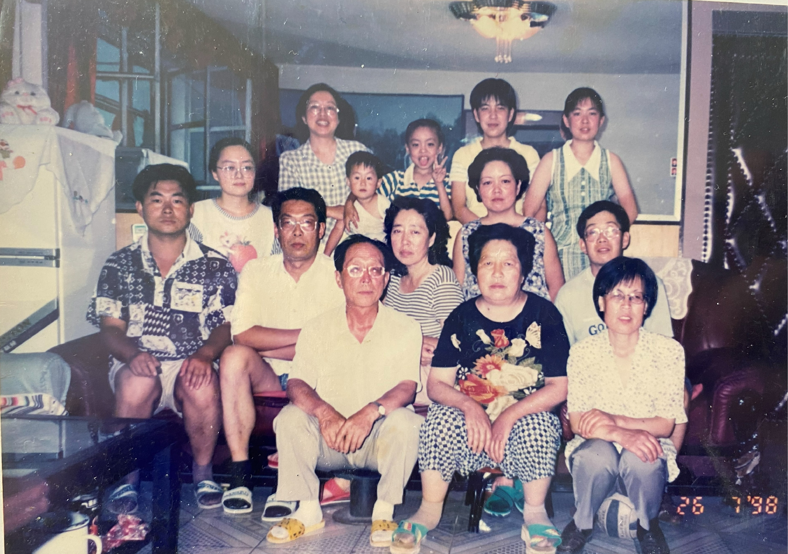
Don't let Yuzhen's everyday absent-mindedness fool you.
When something truly important happened, she became the steady anchor of the entire family.
As the eldest daughter, caring for her younger siblings had become second nature to her.
Whenever a weekend or holiday approached, she loved gathering everyone at her home.
Before sunrise, she would already be in the kitchen, mixing dough, preparing fillings, and getting everything ready.
By the time the first guests arrived, the first batch of shaomai was already coming out of the steamer.
As she reminded the children to wash their hands, she would call out to Jianwei,
"Old man, hurry up! Take that fish off the stove!"
Jianwei was responsible for preparing several of the more elaborate dishes.
Yuzhen took care of everything else—the everyday dishes, the staple foods, and the cold appetizers.
But everyone's favorite was always her handmade shaomai.
From early morning until evening, she stayed busy, wearing a smile the entire time.
It was as if she had been born for gatherings like these—the whole family sitting around one table, talking, eating, and filling the house with laughter.
Whenever someone in the family ran into trouble, Yuzhen was always the first person they thought of.
Someone fell ill?
They called her.
A child needed help finding a job?
They called her.
A couple was having marital problems?
They called her.
She did not always have the answer.
But she possessed a rare gift: she made people feel they were never facing their problems alone.
Over the years, everyone in the family came to feel the same way.
As long as Yuzhen was there, somehow everything would be all right.
When my wife and I were newly married, our circumstances were modest, and we could only afford to rent a small place to live. By coincidence, our landlord happened to know Yuzhen.
When she learned about our situation, she said nothing.
She simply turned around and paid our rent for an entire year.
No matter how many times we later offered to repay her, she always refused.
At the time, my wife's younger brother was still in school, and the family's finances were far from comfortable.
Even so, she quietly took on that expense for us.
What we remember even more deeply is that our daughter was raised largely by her.
During those years, my wife and I were working hard to build our future. Our daughter spent most of her childhood at her grandparents' home.
Yuzhen took care of everything—from meals and clothes to daily routines and countless little expenses.

She did more than help us raise a child.
She carried a large part of our responsibility on her own shoulders.
In the teachers' residential compound, our daughter enjoyed the happiest and most carefree years of her childhood before she eventually left China with us to begin a new life abroad.

During those difficult years, when our young family was struggling to find its footing, Yuzhen and Jianwei carried much of the burden for us.
Looking back now, I still feel both deep gratitude and a lingering sense of indebtedness.
Without them, our journey would have been far more difficult.
Their kindness and generosity remain gifts that I carry with me to this day.
When it came to helping others, Yuzhen never believed that kindness should flow in only one direction.
If hard work was needed, she gave her time and effort.
If money was needed, she contributed what she could.
If a few thoughtful words could ease someone's burden, she always seemed to know exactly what to say.
But what made Yuzhen truly remarkable was her persistence.
Once she decided something was worth doing, she rarely gave up.
Years earlier, she had helped her second younger sister transfer from a printing factory to a position as a sales clerk in a department store.
Today, that might sound like an ordinary job.
But in China during the 1970s, working in a department store was considered highly desirable. In many people's eyes, it was even more attractive than some government positions.
Many years later, whenever the department store manager's wife saw Yuzhen's sister, she would still ask,
"How come your 'Myna Sister' hasn't been around lately?"
The nickname "Myna Sister" came from Yuzhen's lively, talkative personality. Like the bird that inspired the name, she was always energetic, cheerful, and full of conversation.
It wasn't only her family who relied on her. Over time, the neighbors in the teachers' residential compound developed an unspoken understanding.
Whenever someone ran into difficulty, someone would inevitably say,
"Ask Auntie Zhang. Somehow, she always knows where to begin."
She didn't necessarily have all the answers.
She simply knew how to put people at ease.
I still remember the time she needed to borrow a flour sack from a neighbor.
She knocked on the door with a smile.
"Fourth Sister, I'm bothering you again. I'm so careless—I accidentally threw away my flour sack with the rubbish. Could you lend me one? I'll wash it and return it afterward.
"Besides, your home is always the neatest in the whole courtyard. I figured if anyone had a spare flour sack, it would be you."
The neighbor laughed at her mistake, then immediately turned around and brought out a sack for her.
That warmth did more than maintain good relationships with the neighbors.
It reflected the generosity that defined Yuzhen herself.
There were times when former employees criticized her behind her back.
When she heard about it, she simply smiled and said,
"If I were in their position, maybe I'd have complaints too."
Perhaps that was what she meant when she often said,
"When someone treats you poorly, the first thing you should do is ask yourself whether you played a part in it."
The most admirable thing about Yuzhen was that she rarely held grudges.
If someone disappointed her, she let it go quickly.
She often said,
"Helping others is my choice.
If they're happy, then I'm happy.
Once it's done, let it go."
Even after moving to Canada, Yuzhen never lost the warmth or the ability to bring people together that had defined her throughout her life.

She was like a tree transplanted into another land.
Its branches stretched into a new country, but its roots remained firmly connected to family members, both near and far.
Every Spring Festival, every Mid-Autumn Festival, and every important milestone in the lives of the younger generation, she thought of those who called her Dagu or Dayi—the traditional Chinese titles for the eldest aunt on the father's or mother's side of the family.
She remembered their studies, their work, and the details of their everyday lives.
Whose child had just been accepted into university.
Who was going through a difficult time.
Who had welcomed a new baby into the family.
Yuzhen always knew.
And she was always among the first to send her congratulations, encouragement, or support.
To her, family was never just a word.
It was a lifelong responsibility, carried quietly in the heart.
When we first arrived in Canada, we took her to a restaurant in Chinatown.
She tasted one of the dishes, paused for a moment, and immediately shook her head.
"This doesn't taste right,"
she declared.
"With food like this, I don't know how they stay in business. I could cook it better myself."
She wasn't exaggerating.
Yuzhen truly was an exceptional cook.
Later, whether it was a neighborhood potluck or a gathering in the local Chinese community, whatever she brought—shaomai, baked pastries, or even a simple platter of homemade cold dishes—was almost always among the first to disappear.
Language was never a barrier when it came to making friends.
The foreign language she spoke best was always the same:
A steaming plate of food.
And a heart that welcomed everyone.
She had endured hardship.
She had known disappointment.
But she never allowed those experiences to make her bitter.
She had watched countless stories of joy and sorrow unfold on the opera stage.
In the end, she turned the lessons of those stories into the way she lived her own life.
That was how Yuzhen chose to live.
She enjoyed her meals.
She slept peacefully.
And wherever she went, there were always people who remembered her with affection.
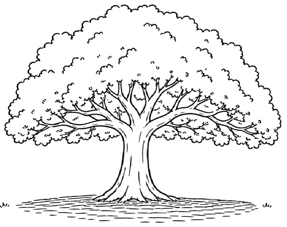
Chapter Six
A Foreign Land and the Final Curtain
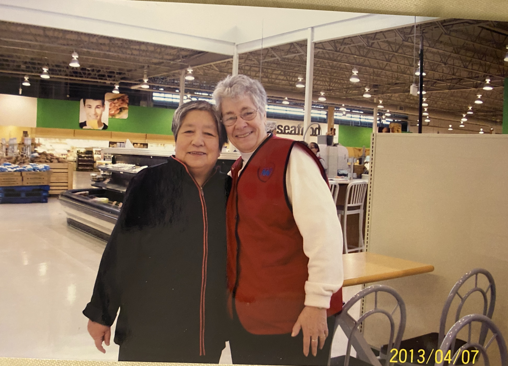
In her later years, we brought Yuzhen and Jianwei to live with us in Canada.
At first, we worried that the language barrier would leave her feeling lonely.
It did not.
Before long, she had built her own circle of friends in the community.
It seemed that wherever she went, she possessed a remarkable gift—the ability to turn strangers into friends.
She loved living in Canada.
Only a few years after arriving, she had already begun making her own final arrangements.
She told us that, when the time came, she wanted to be buried here.
"The scenery is beautiful," she said.
"And the cemetery plots are cheaper."
Even when talking about death, she never lost the practical wisdom—or the gentle humor—that had defined her throughout her life.
She once announced, with complete confidence, what she wanted in her next life.
<"Next time, I want to come back as a giant panda.
No worries.
No hard work.
Just good food and people taking care of me."
But I always thought that even a giant panda could never have lived a life as rich and colorful as hers.
During the COVID-19 pandemic, Yuzhen was diagnosed with bowel cancer while visiting China.
By then, the disease was already advanced.
The family decided not to tell her the full truth.
We simply told her that she had a bowel obstruction.
She wanted to return to Canada for treatment.
My wife immediately flew back to China and arranged first-class tickets with Air Canada so she could accompany both Yuzhen and Jianwei home.

But by then, the cancer was beyond treatment.
The medical team in Canada could offer only supportive care.
As her condition gradually worsened, she was eventually admitted to hospice.
Jianwei visited only once.
Partly because his own health was failing and he feared the emotional strain.
But perhaps even more because he could not bear to see the woman he had loved for more than sixty years so changed by illness.
When he returned home that day, he cried.
We tried to comfort him.
He quietly shook his head.
"I'm not sad."
Then the room fell silent.
He sat alone, gazing out the window.
I don't know what was passing through his mind.
Perhaps, in that quiet moment, he had traveled back more than seventy years—to the bright-eyed little girl with braided hair whom he had first noticed while carrying lunch to his mother.

My wife stayed by Yuzhen's side throughout those final days, accompanying her through the last chapter of her life.
As she grew weaker day by day, Yuzhen understood the truth better than anyone.
Yet she was like a child who refused to admit that evening was approaching.
She stubbornly refused to say the words aloud.
And we, knowing without saying, stayed beside her and quietly pretended that the sunlight was still bright.
None of us ever touched that thin sheet of paper that separated knowing from saying.
Looking back now, I think that was perhaps the deepest expression of love within a family.
It was never that we failed to understand the ending.
It was simply that none of us wanted to be the first to say goodbye.
Yuzhen left this world peacefully.
After my mother-in-law passed away, my father-in-law continued living with us for a time before returning to China.
Nearly three years later, he died there of a sudden heart attack.
Later, I brought his ashes back to Canada, where he was laid to rest beside Yuzhen.
From the day they first met until the day they were reunited, seventy-two years had passed.
There were no dramatic last words.
No heartbreaking farewell like those so often seen on the traditional opera stage.
Perhaps, in Yuzhen's eyes, life and death were simply another transition.
Like stepping backstage after the final scene—changing the costume, waiting quietly, and preparing for the next performance.
And so, she took her final bow.
The sun continued to rise.
The trees outside continued their yearly cycle of budding, flourishing, and shedding their leaves.
But even today, I still find myself thinking of her.
I think of her moving about the kitchen.
I think of her standing at the table, patiently wrapping shaomai one by one.
I think of her hearty laughter filling the house.
I think of her falling asleep on the sofa in front of the television, yet refusing to let anyone turn it off.
I think of the way she earnestly told me about the ninety-eight-year-old woman on television who ate fatty pork every day.
For us,
the person who was always busy organizing family gatherings,
the person who couldn't tolerate even the smallest bit of clutter,
the person who spent a lifetime worrying about everyone else—
will never walk through the door again.
Sometimes, when the whole family gathers together, there are moments when we almost believe she is about to come out of the kitchen once more.
She'll be carrying a plate of steaming food and freshly made shaomai, smiling as she calls out,
"Everyone, sit down.
Time to eat!"
And in that moment, we realize something.
She never truly left us.
What she left behind was never merely a house or a lifetime of possessions.
She left us a home.
She left us the habit of caring for one another.
She left an empty chair that will always remain at the family table.
She was like a tree.
She grew from poor and difficult soil.
Yet she gave shade to everyone around her.
The tree may one day fall.
But the shade it gave will continue to shelter those who come after.
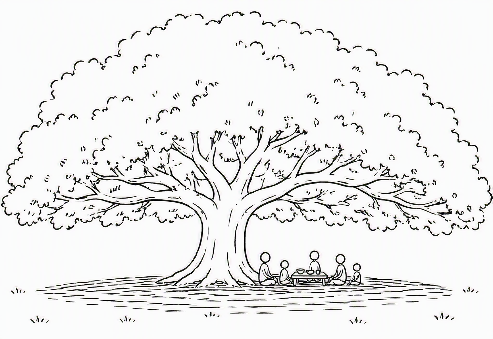